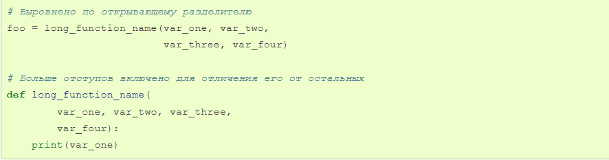
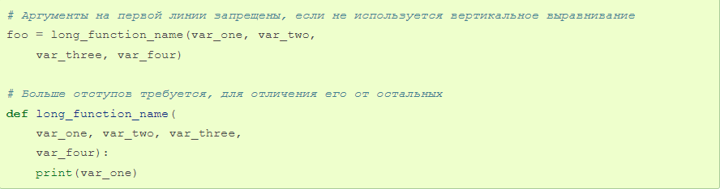
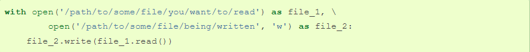
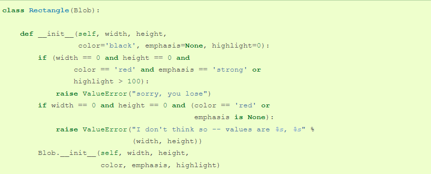

Python — правила оформления кода

Используйте 4 пробела на каждый уровень отступа. Продолжительные строки должны выравнивать обернутые элементы либо вертикально, используя неявную линию в скобках (круглых, квадратных или фигурных), либо с использованием висячего отступа. При использовании висячего отступа следует применять следующие соображения: на первой линии не должно быть аргументов, а остальные строки должны четко восприниматься как продолжение линии.
Правильно:
Неправильно:
Ограничьте длину строки максимум 79 символами. Для более длинных блоков текста с меньшими структурными ограничениями (строки документации или комментарии), длину строки следует ограничить 72 символами. Ограничение необходимой ширины окна редактора позволяет иметь несколько открытых файлов бок о бок, и хорошо работает при использовании инструментов анализа кода, которые предоставляют две версии в соседних столбцах. Некоторые команды предпочитают большую длину строки. Для кода, поддерживающегося исключительно или преимущественно этой группой, в которой могут прийти к согласию по этому вопросу, нормально увеличение длины строки с 80 до 100 символов (фактически увеличивая максимальную длину до 99 символов), при условии, что комментарии и строки документации все еще будут 72 символа. Стандартная библиотека Python консервативна и требует ограничения длины строки в 79 символов (а строк документации/комментариев в 72). Предпочтительный способ переноса длинных строк является использование подразумеваемых продолжений строк Python внутри круглых, квадратных и фигурных скобок. Длинные строки могут быть разбиты на несколько строк, обернутые в скобки. Это предпочтительнее использования обратной косой черты для продолжения строки. Обратная косая черта все еще может быть использована время от времени. Например, длинная конструкция with не может использовать неявные продолжения, так что обратная косая черта является приемлемой:
Ещё один случай - assert. Сделайте правильные отступы для перенесённой строки. Предпочтительнее вставить перенос строки после логического оператора, но не перед ним. Например:
1. Непосредственно внутри круглых, квадратных или фигурных скобок.
Правильно: Неправильно: 2. Непосредственно перед запятой, точкой с запятой или двоеточием:
Правильно: Неправильно: